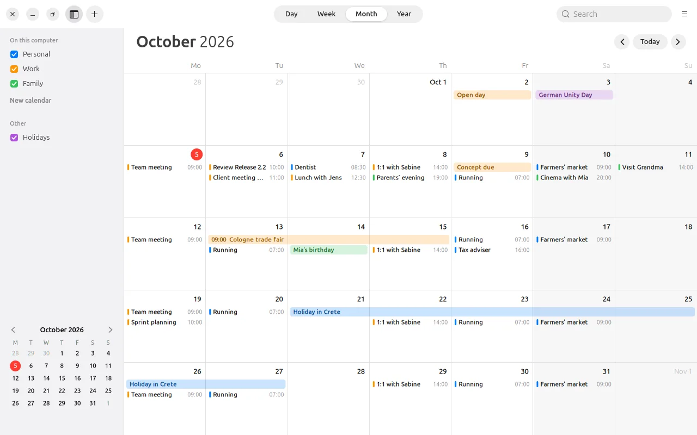
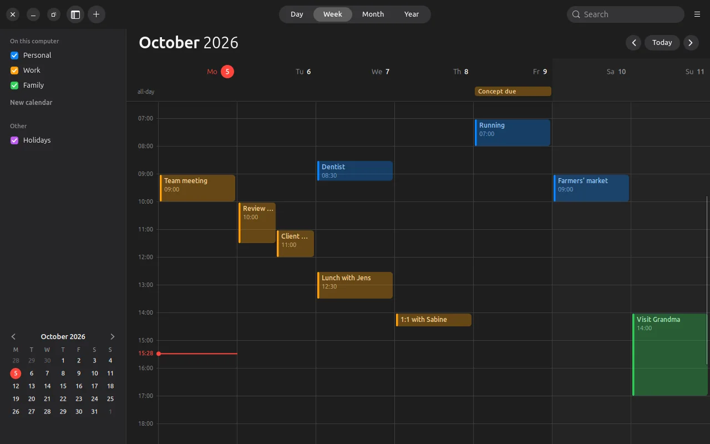
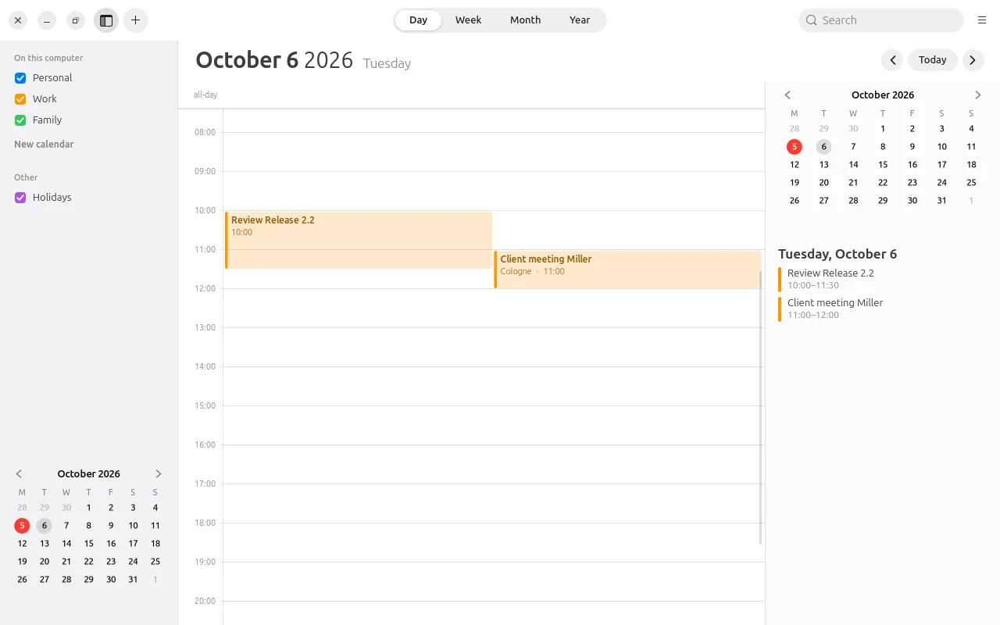
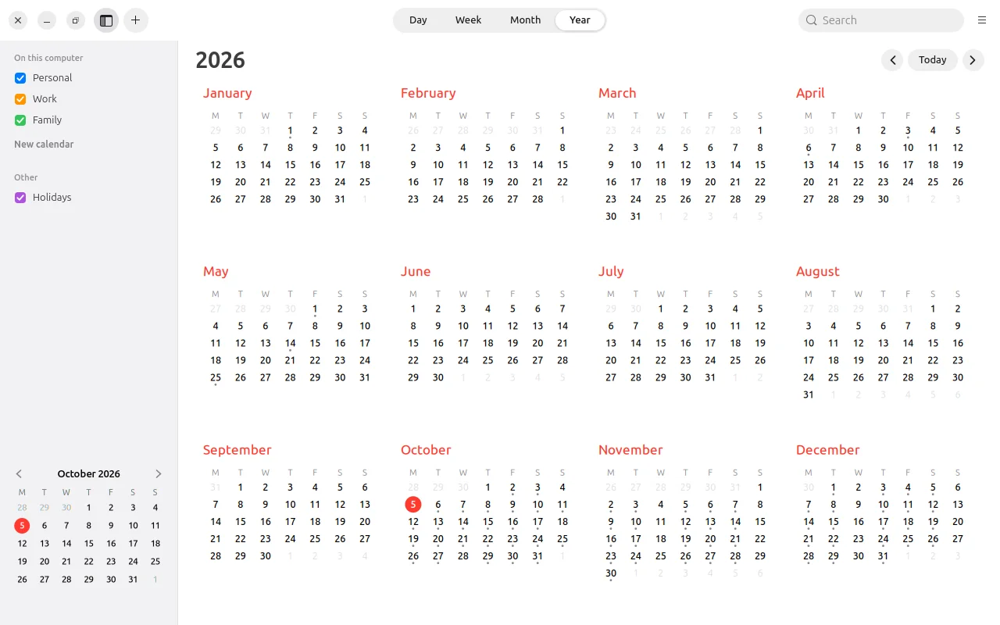
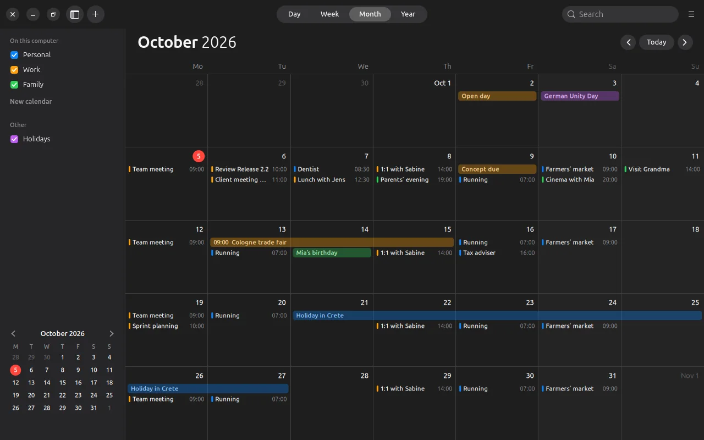
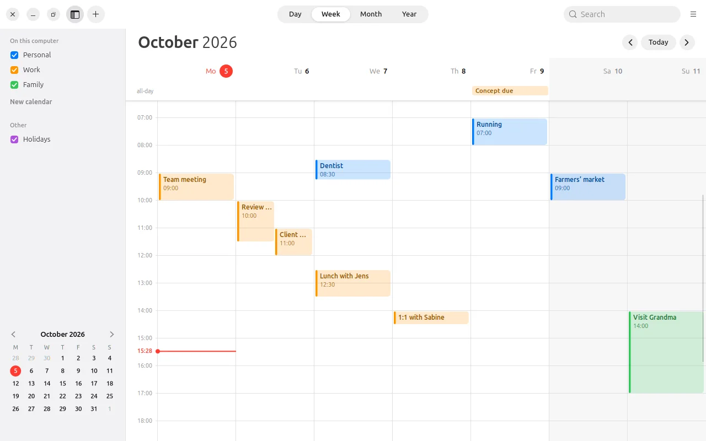

New: version 0.1.1 beta · help and licenses on Android
New: version 0.1.1 beta · help and licenses on Android
Your day.
At a glance.
LiCal looks and works like Apple’s Calendar.
On Ubuntu as on the Mac, on Android as on the iPhone. You don’t need an account.

Views
Four Views
Day, week, month and year, light or dark. A red line shows the current time, all-day events sit at the top, and events at the same time stand side by side.




Events
Events in One Sentence
Type “Lunch with Jens tomorrow 12:30” and LiCal reads the date, time and duration from it. On the computer, a double-click in the calendar creates an event, dragging moves it, and the info window holds everything else.
- Repeats as at Apple, daily to yearly and with exceptions.
- Alerts before the event, all-day ones included. On the computer they arrive even when LiCal is closed.
- Absences with a stand-in, for teams.
- Share by QR code: one event from device to device, without a server.

Features
More Features
Holidays
Public holidays for each German state, as a calendar of their own you can show or hide.
Time Zones
An event can be in another time zone. LiCal converts it correctly, across daylight saving changes too.
Printing
On the computer, LiCal prints one or more months or a list of events, also as a PDF.
Widgets
For the Android home screen there is the date, “Up Next”, the month or a list, as on the iPhone.
The Phone’s Calendars
On Android, LiCal also reads and writes the calendars already on the device, such as those synced with DAVx⁵.
As Your Default
Calendar invitations (.ics) and “Add event” from other apps open in LiCal, on Ubuntu and Android.
Privacy
Events Stay on the Device
LiCal stores your events on your device. Only an event you share yourself by QR code is passed on. Calendars of other apps, such as DAVx⁵, are synced by that app, not by LiCal.
Download
Download
Free, version 0.1.1 beta for Ubuntu 24.04 and later and Android 8 and later.
Ubuntu
Unpack and run linux/install.sh. LiCal then appears in the applications menu, and its icon shows today’s date.
Android
Download and install. LiCal asks for the device’s calendar, for notifications for alerts and, when you scan a QR code, for the camera.
App signature
SHA-256: b53ba4b14abd79e1d31be87858fc0e9a59f13baef9a8531a01cefaddf93ebed9
Source code
The complete source code. You can report bugs and ideas in the issue tracker.
Checksums: SHA256SUMS · Beta, because LiCal has only been tested on a few devices so far. The pictures show made-up sample events.